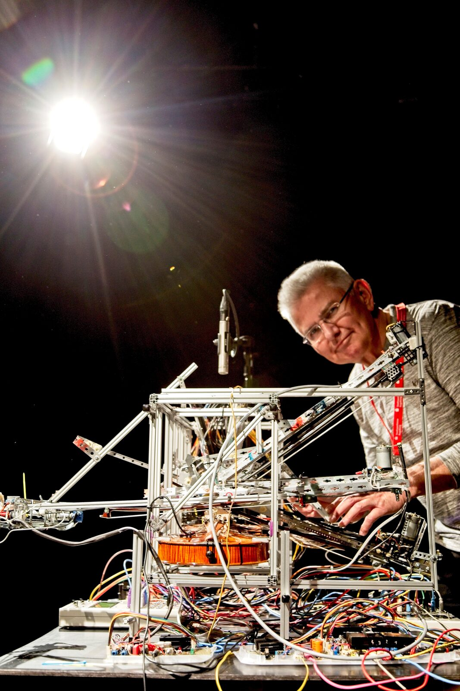
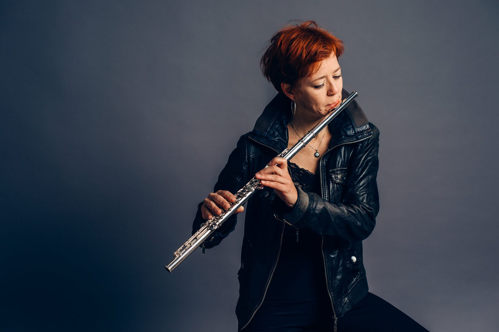
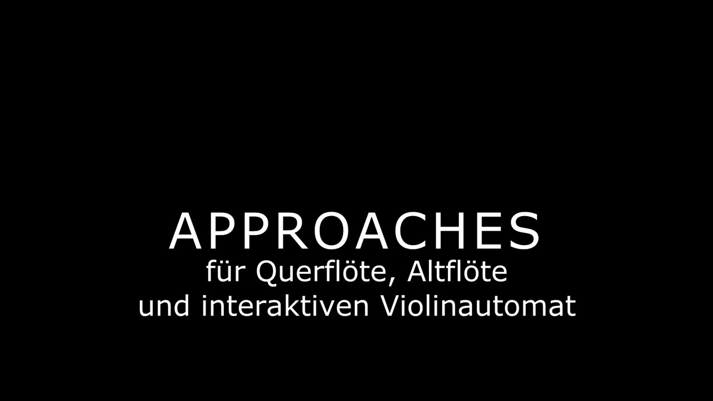

Approaches for Flute and Interactive Violin Automaton
PROJECT DESCRIPTION
Even before the Corona Pandemic became known, I had the idea for an interactive piece with my violin automaton. One of the parameters was the distance of the player to the apparatus. Striking coincidence with social distancing and loneliness during lockdown. The title of the work refers in double meaning to the musical and geometrical approach of an improvising flautist to a music automaton. The automaton represents a backend INTERFACE of the musical expression.
On the one hand, the interactive system with the violin automaton represents a flexible improvisation system in which the flutist can navigate. On the other hand, it is an enigmatic labyrinth in which the performer moves in order to reach musical "exits". The flute playing is addressed to two receivers: the listener - as usual - and the machine. The flautist also takes responsibility for its response. There is a description of the reaction for the six movements, i.e. a score. For the listener this results in a duet. The mostly very direct - but not trivial - reactions of the machine have led to considerable learning curves.
Developing this requires difficult learning with surprises. The learning effects are the result of testing the reaction algorithms by playful improvisation of the flautist Ms Karina Erhard with the system. In parallel, the system was refined. This simultaneity in learning has demands not known in traditional music.
The technical game involves the step-by-step testing of the coupled system from many parts: G2M Pitch2MIDI module, the NI Reaktor panels, infrared distance sensors, the digital2CV converters for the fingers and bow motors. Conversely, the CV of the IR sensors are converted back to MIDI by the Doepefer module. Not to forget the in-ear monitoring and head microphone transmitter for the flautist.
Over many months, the builder and composer - also with the support of the flutist - refined control and hardware.
The improviser chooses from six algorithms by approaching the apparatus. The playing of the violin automaton is affected by the distance and by the flute sound.
The use of technology is rather playful and does not compare to robotics. A mechanical-acoustic sound generator brings many limitations and challenges to the implementation. Even artifacts of the actuators are implemented musically: the strings are also played percussively. New sounds are also created with conflict rhythms between (frequency~) vibrato and (bow~) tremolo.
As "interactive music without loudspeakers" the concept stands in an exciting own development strand of sound art and visualization.
PROGRAM NOTES
Even before the Corona Pandemic became known, I had the idea for an interactive piece with my violin automaton. Besides the pitch, the distance of the player to the machine was a parameter for the communication with the machine. Striking coincidence with social distancing and loneliness during lockdown. The title of the work has a double meaning: musical and physical approach of the flautist to the automaton.
On the one hand, the interactive system with the violin automaton represents a flexible improvisation system for the flutist. On the other hand, it is an enigmatic labyrinth in which the performer moves. Developing this requires difficult learning with surprises. The learning effects are the result of testing the reaction algorithms by playful improvisation of the flautist with the system. In parallel, the system was refined. This simultaneity in learning has demands not known in traditional music. The piece is dedicated to the performer of the 2020 premiere Ms Karina Erhard.
The use of technology is rather playful and does not compare to robotics. The automaton allows extended sounds and rhythms by means of three bows, vibrato, percussion on the strings and ponticello. New sounds emerge from conflict rhythms between vibrato and tremolo.
PERFORMANCE REQUIREMENTS
For an on-site performance, we would provide the interactive violin machine (requiring a table 2x2 meters, 90 cm high). For the movements of the flutist, additional space on stage of two meters on all four sides around the machine would be needed.
Two audio signals (flute and automaton) would be provided as unbalanced TRS jacks. HOWEVER: Given the Corona restrictions, we will provide a video of the piece in Full HD with stereo sound.
MEDIA


Karl F. Gerber with his experimental violin automaton

Composer Karl F. Gerber


Flautist Ms Karina Erhard

▶“Approaches” by Karl F. Gerber, Karina Erhard on Flute and Alto Flute (uploaded FullHD)
Approaches (2020) by Karl F. Gerber, Karina Erhard on Flute and Alto Flute